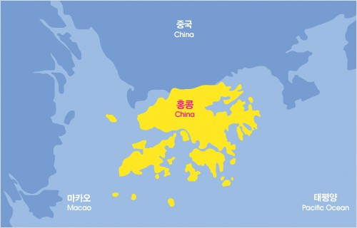

화려한 야경의 도시 홍콩. 먹거리와 야경으로 유명한 홍콩은 대중교통이 잘 되어있어 자유 여행을 하기 좋은 도시다. 쇼핑과 함께 야시장 투어가 유명하고, 빅토리아 파트에서 바라보는 도시 야경은 필수 관광코스다. 홍콩은 특히 음식이 유명한데, 인구 대비 가장 많은 음식점을 가지고 있다. 딤섬과 밀크티가 대표적으로 유명한 음식이며, 광둥요리부터 중국 각지의 본토요리를 모두 만나볼 수 있다.
